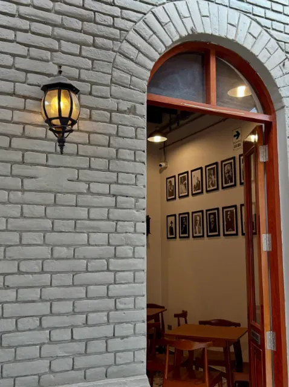
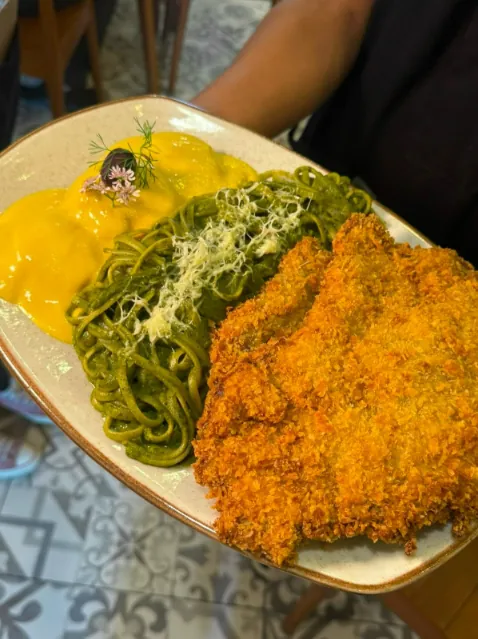
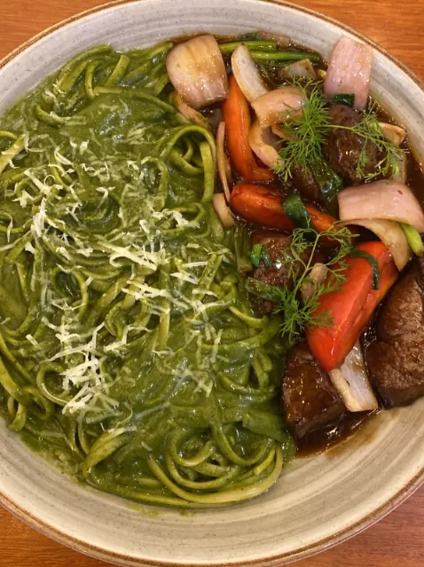

Taberna criolla en Jesús María
Cocina criolla de recetario, en una casona de 120 años
Ají de gallina, carapulcra con sopa seca, cau cau y causas, como en los huariques de antes. Separa tu mesa y la taberna te confirma por WhatsApp.
- Abrimos
- Martes a domingo, 12 m. a 5 p. m.
- Dónde
- Av. República de Chile 462

Un nombre que es un abuelo
- Alfonso
- Domingo
- del
- Río
- Arenas
Addra son las iniciales de Alfonso Domingo del Río Arenas, abuelo del chef Daniel del Río: él le enseñó la cocina y la música criolla, y con él recorrió los huariques de Lince.
La taberna abrió a fines de 2023 en una casona de unos 120 años en Jesús María.
La carta sale de recetarios antiguos, de la familia y de los huariques de siempre. Las paredes recuerdan a Lucha Reyes, Óscar Avilés y Mario Vargas Llosa.
La cocina y la música criolla se aprendieron en casa.
Pet friendly: tu perro también es bienvenido.
De la cocina de Daniel del Río




La carta
Recetas de la familia y de los huariques de siempre. Pregunta por el plato del día y los precios por WhatsApp.
Entradas
- Papa a la huancaína
- Pulpo al olivo
- Festival de causas (langostinos, acevichada y pulpo)
- Ceviche de pescado
- Causa de langostinos
Sánguches con camote
- Sánguche de chicharrón
- Sánguche de sangrecita
Fondos
- Ají de gallina
- Arroz con pollo con huancaína
- Carapulcra con sopa seca
- Seco de res con frejoles
- Lomo saltado
- Tallarines verdes con lomo saltado
- Tallarines verdes con sábana de bistec al panko y huancaína
- Arroz chaufa de pescado
- Jalea de pescado
Guisos
- Cau cau
- Chanfainita
- Combo criollo: dos guisos con arroz blanco
Separa tu mesa
La casona se llena los fines de semana. Llenas esto, se abre WhatsApp con tu pedido de mesa y la taberna te confirma.
Atendemos de martes a domingo, de 12 m. a 5 p. m.
Av. República de Chile 462
Jesús María, Lima. Martes a domingo, de 12 m. a 5 p. m.
Salió en Provecho, de El Comercio.